← Home

Coach Plus
Coach Only
SnowPlus · Off-Season Training
"
Movement quality
comes from
controlling the goal,
not the body.
· Movement Intelligence
Physio Approved
SnowPlus Internal Reference
教練專用版 · Coach Plus
肌群活化機制、神經控制觀察點
與代償模式辨識手冊
27 Movements · 8 Categories
Season 26/27 · Version 2.2 · 2026
SnowPlus Movement Quality Framework
Version 2.2 Note
本版為 Coach / Advanced Edition，保留肌群、代償與神經控制觀察語言，但將 Open Edition 中不適合大眾閱讀的術語集中在教練層使用。所有 cue 應先轉譯為外在目標、路徑、聲音、節奏或落點，再交給學員執行。
Safety / Screening Note
跳躍、落地、單腳控制與旋轉類訓練，應先確認學員沒有急性疼痛、明顯腫脹、近期手術、韌帶傷害、半月板傷害或關節不穩定感。若學員出現疼痛、代償明顯增加、落地失控、膝蓋內扣無法修正、或左右差異過大，應先降低高度、減少速度、改用雙腳或低衝擊版本；必要時轉介醫療或物理治療專業人員評估。
四大訓練主軸 · Training Framework
1關節前置 A 活動準備：先確認活動度，確保後續所有動作的品質與安全
2反射性彈性 B 彈跳 → C 減速落地：快速接收地面、快速回彈，再建立落地煞車控制
3穩定先於發力 D 核心抗旋轉 → E 旋轉爆發：先建立支點，再輸出旋轉
4爆發與整合 F 爆發力 → G 單腿 → H 反應整合：把力量、單側控制與不確定性接起來
胸椎旋轉開書式
T-Spine Rotation
側躺如書本翻頁，訓練胸椎旋轉活動度，是後手畫弧與 180 上下半身分離的基礎。
主要肌群 · Primary
多裂肌半棘肌（胸椎旋轉）
次要穩定 · Stabilizer
菱形肌（肩胛位置維持）
SETS3
REPS10/邊
TEMPO緩慢
REST30秒
01側躺、雙腿屈膝疊在一起
02上方手往後打開，眼睛跟著手轉
03手畫弧到身體後方地面、胸口朝上
04下方腿保持固定不動、旋轉來自胸椎
常見代償 · Coach Watch
旋轉從腰椎發生而非胸椎 → 胸椎太僵，腰椎代償。需固定骨盆後再觀察；從側面看上半身胸口角度是否真的轉到接近朝上。
牆面滑動
Wall Slide
手臂沿牆面上下滑動，同時診斷與訓練胸椎、肩胛活動度。
SETS3
REPS10
TEMPO緩慢
REST30秒
01眼睛看正前方，不要看手——防止頸部屈曲代償，同時整合視線前饋
02注意手背和牆面之間的接觸感——讓接觸輕、均勻、全程不中斷，像在牆上印一條乾淨的痕跡
03下背貼牆、不能拱腰
04做不到代表胸椎和肩活動度差，記錄作為追蹤基準
常見代償 · Coach Watch
手臂上滑時肩胛聳起（上斜方肌代償）→ 下斜方肌完全無效；從正面難以看到，需側面觀察肩胛動作。做不到全程貼牆是診斷而非失敗，記錄後追蹤改善。
腳踝活動度測試
Knee-to-Wall Test
膝蓋朝牆推、腳跟不離地，量化測量踝關節背屈活動度。評估用，不計訓練組數。
目標組織 · Target Tissue
比目魚肌（膝屈曲版主力）腓腸肌
SETS測試
REPS3次/邊
TEMPO量測
REST—
01跪姿、前腳掌平踩地面、面對牆
02膝蓋往前推、目標碰牆但腳跟不離地
03量測腳尖到牆的距離（10cm 以上為良好）
04兩邊都測、左右差異 > 2cm 要注意
評估說明 · Coach Note
後腳跟離地 = 距骨前滑受限或阿基里斯腱/比目魚太緊。表面有背屈但實際是後腳跟代償——需從側面確認。左右差異 > 2cm 時記錄並追蹤，SSC 訓練效率受踝背屈角度直接影響。
站姿髖飛機式
Standing Hip Airplane
髖深層旋轉肌群在功能上等同肩旋轉袖，負責股骨頭在髖臼的向心壓縮與動態穩定。在單腳負重下同步訓練支撐腳的髖外旋離心控制，以及骨盆三平面抗旋轉能力。落地時深層六肌不足，出現股骨內旋（膝外翻）、Trendelenburg pattern，導致 IT Band 過載與 ACL 保護機制失效。
主要肌群 · Primary
梨狀肌閉孔外肌閉孔內肌上下孖肌股方肌臀中肌後束
次要穩定 · Stabilizer
腰多裂肌腹橫肌比目魚肌（支撐腳）
SETS3
REPS8–10/腳
TEMPO3-1-3
REST60秒
01站立腳大腳趾根部壓穩地板，膝蓋對齊第二趾——不要讓它往內跑
02身體往前傾時，骨盆像盤子朝天花板轉，不是朝地板歪
03去程 3 秒、回來 3 秒，感覺屁股深層在用力，不是腰在轉
04懸空腿放鬆，控制動作的是站立那側的髖
常見代償 · Coach Watch
骨盆對側下沉（Trendelenburg）→ 臀中肌後束無力，提示「把站立側的髖往外頂，像要碰牆」。腰椎跟著旋轉 → 核心剛性不足，提示「肚臍貼脊椎，只有骨盆在動，肩膀保持朝前」。
站姿腳踝彈跳
Pogo Jumps
以腳踝為主導的低幅度連續彈跳，建立踝關節剛性與 SSC 反射效率。
主要肌群 · Primary
腓腸肌比目魚肌屈趾肌群
次要穩定 · Stabilizer
脛骨前肌（落地緩衝）
SETS3–4
REPS20–30
TEMPOX-0-X
REST45秒
01想像地板是燙的，每次落地都要在最短時間內把自己彈走。注意彈跳節奏是否像節拍器一樣穩定。
02地面接觸時間越短越好——燙腳節奏讓神經系統自動選擇腳踝 SSC，不需要提示膝蓋角度
03跳躍高度僅需 1-3 公分，頻率 > 高度
04身體保持直立、骨盆中立、雙手叉腰避免擺臂代償
常見代償 · Coach Watch
膝蓋在跳躍中屈曲超過 10° → 踝 SSC 不足，髖膝代償。學員做出「小深蹲跳」而非腳踝彈時，先退回 Calf Raise 建立踝離心強度再繼續。
單腳腳踝彈跳
Single-Leg Pogo
將 Pogo 的腳踝彈簧反射移到單腳上，建立側向落地單腿剛性。
次要穩定 · Stabilizer
腓骨肌群（踝外側穩定）臀中肌
SETS3
REPS10/邊
TEMPOX-0-X
REST60秒
01站立腳膝蓋保持微彈性，不刻意深蹲；主要觀察腳踝快速反彈與節奏穩定
02懸空腳保持懸空、不落地
03動作快速不停頓，落地即彈
04兩邊次數對稱，不要只練強的那邊
常見代償 · Coach Watch
支撐腳踝 pronation 塌陷（足弓內塌、後足外翻）→ 腓骨肌群不足或協調不良；骨盆側移（Trendelenburg）→ 臀中肌不足。左右明顯不對稱時需個別訓練弱側。
低箱反彈跳
Low Box Drop
從 30cm 低箱跳下後立即反彈，訓練「落地即彈」的 SSC 反射。
次要穩定 · Stabilizer
脛骨前肌核心抗伸展
SETS3
REPS8
TEMPOX-0-X
REST60秒
01落地後立刻「把地板推走」——聽自己腳底的聲音，越輕、越快消失越好
02落地時間短、聲音輕，不追求跳高；膝蓋保持自然彈性，避免刻意鎖膝
03落地立刻爆發跳起，不停頓
04從低箱開始（20-30cm），熟練後再升高
常見代償 · Coach Watch
接地後明顯停頓才反彈 → 快速彈性時間窗口未達成，髖膝在吸收能量而非快速回彈。這種情況先降低箱高，重建「聲音輕快」的感覺。
側向跳穩定落地
Lateral Bound
單腳側向爆發推蹬、對側單腳穩定落地，訓練側向爆發與落地控制。
主要肌群 · Primary
腓腸肌／比目魚股四頭臀大肌
SETS3
REPS6/邊
TEMPOX-0-3
REST60秒
01目標是讓自己在空中飛得越遠越好——距離目標驅動最大爆發推地
02想像落點是一個小圓圈，要精準降落在圓圈中心
03在圓圈裡穩住 3 秒不晃才完成一下
04模擬 snowboard 側向發力與落地控制
常見代償 · Coach Watch
落地膝內扣（valgus collapse）最常見，女學員尤其明顯。另一個是軀幹過度前傾代替髖伸爆發——這兩種問題需要分開處理。
離心慢速深蹲
Eccentric Squat (Deceleration)
刻意拉長離心階段，訓練股四頭與臀肌的離心控制，建立落地煞車能力的肌力基礎。這是落地動作的力量前提，不是落地練習本身。
主要肌群 · Primary
股四頭（離心主力）臀大肌
次要穩定 · Stabilizer
豎脊肌（等長維持）核心
SETS3
REPS6
TEMPO5-0-1
REST60秒
01下蹲 5 秒慢速、控制下放
02到底不停留、立刻反彈
03站起 1 秒正常速度
04重量用平常深蹲的 60-70%
常見代償 · Coach Watch
下蹲時腰椎圓弧（lumbar flexion）；重量往腳趾移、臀部沒往後推。此動作是落地吸震的肌力前提，不是落地練習本身。
落地吸震
Box Drop Landing
從箱子跳下後安靜停住不彈起，訓練踝-膝-髖三關節依序吸震。
主要肌群 · Primary
股四頭（離心）臀大肌脛骨前肌
次要穩定 · Stabilizer
腓骨肌群（踝外側）
SETS3
REPS6
TEMPOX-3-慢
REST60秒
01跳下前視線先移到落點正前方固定目標，鎖定它直到完全站穩——視線前饋讓踝-膝-髖自動分配緩衝
02落地要「安靜」——讓聲音越輕越好
03停住 3 秒才完成一下
04這個動作不彈起，與 Low Box Drop 不同
常見代償 · Coach Watch
膝蓋落地瞬間往內塌（valgus）；軀幹過度前傾重心前移到前腳掌。兩種代償同時出現時，先處理視線前饋——頭低下去是根本原因。
單腿落地
Single-Leg Box Drop
從矮箱單腳跳下並穩住，挑戰單側落地控制與膝蓋穩定。
SETS3
REPS5/邊
TEMPOX-3-慢
REST60秒
01從 20cm 矮平台單腳跳下
02落地腳膝蓋對齊腳尖、不內扣
03穩住 3 秒、另一腳保持懸空
04從低高度開始，雙腳版能穩住再做單腳
常見代償 · Coach Watch
全腳跟先著地 = 離心控制嚴重不足，這是最直接的警訊；膝內扣同 No.09。出現這兩個問題時退回雙腳版 No.09 重建基礎。
高腳杯深蹲
Goblet Squat
B 類離心深蹲（NO.09）訓練了股四頭的煞車能力，此動作補完向心相——壓雪、carve 轉換起身、跳躍推蹬都需要爆發性向心收縮，是深蹲跳（NO.20）的力量前提。前置負重強制軀幹直立，改善 boarder 常見的重心後移代償；足跟抬高 1-2cm 補償踝背屈活動度限制，讓深蹲深度不受制約。
主要肌群 · Primary
股直肌股外側肌股內側肌（VMO）臀大肌
次要穩定 · Stabilizer
臀中肌腓腸肌／比目魚肌腰多裂肌腹橫肌
SETS3–4
REPS8–12
TEMPO3-1-X
REST90秒
01壺鈴抱在胸口，手肘往下指——壺鈴若往前掉，代表背在拱
02蹲下時想像把地板往腳跟方向推開——膝蓋自然跟著腳尖走
03站起來從腳跟出力，屁股夾緊——用腿推起來，不是用腰挺
04可在腳跟加 1-2cm 板補償踝背屈限制，找到最順的深度
常見代償 · Coach Watch
早髖代償（起身時臀先跑、軀幹過度前傾）→ 股四頭弱，提示「胸口往上帶，膝蓋和臀部同步起來」。膝外翻（站起時）→ VMO／臀中肌未激活，提示「膝蓋對準第二趾，不要往中間靠」。
繩索抗旋轉維持
Cable Anti-Rotation Hold
雙手前推維持靜止，抵抗繩索側向拉力，訓練 180 落地後的「旋轉煞車」。
次要穩定 · Stabilizer
臀中肌（骨盆穩定）
SETS3
REPS20秒/邊
TEMPOHOLD
REST45秒
01機器設在胸口高度，側站距拉點約 1 公尺，雙手前推到完全伸直
02身體不能被拉轉、保持正面方向
0320 秒撐住身體穩定不晃；重量約 5 kg
04這個動作訓練「停下旋轉」的能力
常見代償 · Coach Watch
軀幹跟著繩子方向偏移 → 核心沒抗住。通常是重量設太重，先降重再確認「身體像一塊木板」的感覺。
站姿抗旋轉推舉
Pallof Press
雙手前推時抵抗側向拉力，訓練核心「不被旋轉力量帶走」的動態穩定。
次要穩定 · Stabilizer
臀中肌（骨盆穩定）
SETS3
REPS10/邊
TEMPO2-1-2
REST45秒
01側站、雙手在胸前握把手；重量 3-4 kg，一次設定好拉到胸前
02從胸前推出伸直 → 慢慢收回胸前反覆，雙手始終在身體正前方不偏移
03身體不能被繩子拉向側面，保持正面
04與 Anti-Rotation Hold 不同，這個是動態反覆
常見代償 · Coach Watch
肩膀往外旋方向偏移 → 軀幹未真正抗住。讓學員盯著正前方一個固定點不移動視線，外部焦點能有效提升抗旋轉穩定度。
死蟲式
Dead Bug
仰躺對角延伸四肢，訓練核心抗伸展與骨盆穩定。
次要穩定 · Stabilizer
髖屈肌（等長穩定）
SETS3
REPS10/邊
TEMPO2-0-2
REST45秒
01仰躺、雙手指天、雙腿桌面狀
02對角延伸（右手 + 左腳），動作緩慢控制
03下背全程貼地、不離地
04核心鎖定、骨盆中立
常見代償 · Coach Watch
腳伸直時腰椎離地（lumbar extension）= 腹橫肌未維持 IAP（腹內壓）——這是通病。讓學員把手放在腰椎下方感受下背是否抬起，再決定是否降低難度（膝蓋不完全伸直）。
繩索斜砍
Cable Wood Chop
從高處對角線拉至對側髖部，整合髖旋轉與斜向核心發力。
SETS3
REPS8/邊
TEMPO1-0-X
REST60秒
01繩索固定在頭頂以上高度
02從一側肩膀對角斜砍到對側髖部，軌跡要走對角線，不要水平
03先啟動髖部旋轉，軀幹跟上，不要用手臂硬拉
04回程慢速 hold 2 秒再做下一下，控制離心
常見代償 · Coach Watch
肩膀先動、髖穩著不轉 → 純上肢動作，旋轉鏈消失。讓學員把手放在髖骨上先感受髖旋轉，再加上手臂動作。
繩索旋轉發力
Cable Rotation
以髖驅動上半身的水平旋轉爆發，建立「下肢穩、髖驅動、上半身跟隨」的旋轉發力鏈。
主要肌群 · Primary
腹斜肌臀中肌對側髖外旋肌
次要穩定 · Stabilizer
肩袖（穩定端點）
SETS4
REPS6/邊
TEMPO1-0-X
REST60秒
01雙手握把手在右髖外側；膝蓋微彎 15-20°，腳踩穩全程不移位
02髖部先動，軀幹跟著轉，不要用手臂拉
03旋轉到底時雙手在對側肩外、手臂仍伸直
04重量 3-5 kg，機器設在胸口高度，站位側對拉點
常見代償 · Coach Watch
手臂先拉動而非髖先啟動 → 旋轉力量鏈從遠端開始，喪失 proximal-to-distal sequence。確認學員感受骨盆旋轉帶動肩帶，而非用手臂划水。
後手弧線旋轉
Rear-Arm Arc Rotation
以低位繩索模擬 BS 180 的後手弧線軌跡，建立骨盆鎖定、後手先行、旋轉末段視線 spot 的神經肌肉模式。
主要肌群 · Primary
後三角肌棘下肌/小圓肌對側腹斜肌
次要穩定 · Stabilizer
腰方肌（QL）對側側屈穩定
SETS3
REPS6–8/邊
TEMPOX-2-慢
REST90秒
01骨盆先保持穩定：旋轉啟動初期由後手弧線建立方向與空間參考，不要讓骨盆搶先打開
02後手軌跡從腰高後方斜向前上方劃弦，想像在空中畫一條斜線到對側肩膀高度；手是路徑 cue，不是暴力甩動
03弧線到體前中線時才讓骨盆跟進，同時第一次把視線轉向「前方目標」——這是 BS 末段 spot 的時機
04注意繩索在體前中線被弧線拉到最緊繃的那個點；提示「走完整路徑」，不要提示「手臂用力」
常見代償 · Coach Watch
弧線從手肘帶而非肩胛骨啟動 → 後旋轉肌群沒有真正參與；骨盆在旋轉啟動前就先轉動 → 後手 cue 失去方向設定功能，BS 啟動順序被打亂。
BS vs FS 啟動差異
FS：視線先行 → 髖與軀幹跟上
BS：後手弧線先行 → 身體跟隨路徑 → 旋轉末段才 spot
混用兩種啟動順序，常見結果是旋轉卡在 90° 或提前煞車。
啞鈴羅馬尼亞硬舉
Dumbbell Romanian Deadlift
訓練髖鉸鏈與後鏈力量基礎，是 ollie 起跳與落地吸震的關鍵動作模式。此動作建立力量基礎，後接爆發性動作。
次要穩定 · Stabilizer
豎脊肌（等長）核心
SETS3
REPS10
TEMPO3-0-1
REST90秒
01雙手各拿一個啞鈴垂在身前，雙腳與肩同寬
02屁股往後推、上半身前傾，啞鈴沿大腿前側往下滑
03膝蓋微彎 10-15° 全程不變，背部全程挺直
04大腿後側有強烈拉伸感是對的，臀部夾緊站起
常見代償 · Coach Watch
腰椎圓弧（背部拱起）= 腿後肌太緊或髖鉸鏈模式未建立；重量往腳趾移 = 臀部沒有真正後推。注意股二頭肌長頭在髖屈過程的離心載荷控制——這是最常被忽略的部分。
深蹲跳
Squat Jump
從半蹲爆發向上跳起，訓練踝、膝、髖三關節同時伸展（triple extension）。
SETS4
REPS5
TEMPOX-0-X
REST90秒
01起跳瞬間想像把天花板往上推開，腳、膝、髖同時伸直像一根撐杆——視線看前方固定點不低頭
02全身完全伸展，雙手向上揮、踮腳尖
03落地順序：前腳掌先著地 → 腳跟踩穩 → 臀部後坐，依序吸震
04這個動作用到膝蓋和髖，與 Pogo Jumps 不同
常見代償 · Coach Watch
起跳時髖沒有充分伸展 → quad-dominant pattern，膝主導而非髖推。觀察起跳頂點時身體是否完全打直，若仍呈半蹲狀態代表爆發鏈斷在髖。
爆發式臀推
Ballistic Hip Thrust
骨盆以爆發意圖向上推起、不在頂端停頓，利用後鏈快速向心收縮訓練 back-foot drive 的爆發能力。與 RDL 的離心力量訓練互補，覆蓋後鏈完整的爆發週期。
次要穩定 · Stabilizer
核心抗伸展腹橫肌
SETS4
REPS5
TEMPOX-0-X
REST90秒
01上背靠長椅邊緣、雙腳平踩地面；每下都有明確的速度意圖，不是慢速肌力訓練
02骨盆從低點爆發推起，頂端肩-髖-膝成一直線、臀部完全伸展
03不在頂端停頓，爆發到頂後控制下放，再立刻推起——連續節奏，不是靜止重複
04進階：以 snowboard 後腳對應側的單腳版本執行
常見代償 · Coach Watch
腰椎過伸代替臀大肌伸展 → 頂端下背拱起而非臀部夾緊；骨盆側傾 → 臀中肌不足，先練 No.21 單腿臀橋再回來。這個動作的核心是「爆發速度意圖」——慢速做就失去了訓練目的。
單腿羅馬尼亞硬舉
Single-Leg Romanian Deadlift
以單腳支撐折髖、浮腳延伸成一直線，訓練後側鏈力量、髖鉸鏈與單腳平衡。
次要穩定 · Stabilizer
腓骨長肌/短肌（踝外翻穩定）
SETS3
REPS8–10/邊
TEMPO3-1-1
REST60秒
01注意力放在浮腳的軌跡上，不要看地板
02身體 + 後腳成一直線，從頭到腳跟一條線
03站立腳膝蓋微彎不動，動作來自髖鉸鏈
04背部挺直不拱背，脊椎全程中立
常見代償 · Coach Watch
支撐腳踝內翻塌陷 → 腓骨肌群不足；骨盆側移（Trendelenburg sign）→ 臀中肌不足。左右不對稱超過 2 次/組時需個別加強弱側。
單腿臀橋
Single-Leg Glute Bridge
單腳支撐將臀部頂起至肩-髖-膝一直線，強化單側臀肌與骨盆穩定。
次要穩定 · Stabilizer
腿後肌群脛骨後肌（踝穩定）
SETS3
REPS10/邊
TEMPO2-1-2
REST45秒
01仰躺、雙膝彎曲、腳掌平放地面
02抬起一腳伸直懸空，只用另一腳支撐
03把骨盆當托盤，上面放杯水，抬起時不讓水灑出來——骨盆水平控制整合臀中肌與臀大肌
04不能塌腰、頂端停 1 秒再下放
常見代償 · Coach Watch
抬起瞬間骨盆往懸空腿側下沉 → 支撐側臀中肌不足；腿後肌抽筋 → 腿後肌代償，臀大肌沒有主導。後者先降低重複次數並強調「頂端夾緊臀部」。
後腳抬高分腿蹲
Bulgarian Split Squat
後腳踩凳、前腳單腳主導，訓練直立站姿的單側承重模式。Snowboard active stance 要求在站姿下非對稱加載——RDL 和臀橋都不覆蓋這個模式。
主要肌群 · Primary
股四頭（前腳主導）臀大肌大腿後側群
次要穩定 · Stabilizer
腓骨肌群（踝穩定）臀中肌
SETS3
REPS8/邊
TEMPO3-0-1
REST60秒
01前腳距凳子約 60-80cm，讓下蹲時前膝蓋能垂直在腳踝上方
02軀幹直立，不前傾——這與 RDL 的折髖模式完全不同，是直立單腿承重
03前腳膝蓋對齊腳尖第二趾，全程不內扣
04前腳蹬地站起，後腳只是支撐點不主動發力
常見代償 · Coach Watch
前膝超過腳尖太多 → 站位太靠後，先調整距離；上半身前傾（髖鉸鏈模式滲入）→ 提示「胸口朝正前方」；後腳踩凳抓力 → 學員在用後腳代償，通常是平衡問題，先徒手練習建立本體覺再加重。
識別保護反應 · Fear Response
屈曲反應（脊髓層級）：膝蓋自動彎深、重心下沉、視線往下看——速度快，不受意志控制。
僵住反應（大腦保護機制）：全身同時收緊、動作失去流動感。
出現時：① 先減速至舒適範圍 ② 視線移到前方固定目標 ③ 做兩次熟悉動作確認安全感後再繼續。
深蹲跳穩定落地
Squat Jump to Stick Landing
把爆發跳起與穩定落地整合成一個動作，模擬 snowboard 跳台完整流程。
主要肌群 · Primary
股四頭臀大肌腓腸肌/比目魚
次要穩定 · Stabilizer
核心抗伸展腓骨肌群
SETS3
REPS6
TEMPOX-0-X-3
REST60秒
01半蹲爆發跳起、雙手向上揮
02落地後立刻穩住 3 秒不動
03整合「爆發 + 控制」兩種能力
04落地姿勢膝蓋對齊腳尖、不晃
常見代償 · Coach Watch
跳躍本身通常能過，「凍住 3 秒」才是考驗——落地後膝蓋持續晃或骨盆下沉代表 landing mechanics 不足。這個動作是整合測驗，問題出在哪裡就退回對應的 A 或 B 類單項練習。
Ollie 模擬跳
Ollie Pattern Jump
以 snowboard 站姿，後腳腳踝爆發、前腳跟上，訓練 ollie 所需的不對稱發力神經肌肉模式。
主要肌群 · Primary
後腳腓腸肌（主導蹬地）前腳脛骨前肌
SETS3
REPS8–10
TEMPOX-0-X
REST60秒
01不對稱發力——後腳腳踝主導爆發、前腳被「彈」起
02膝蓋幾乎不彎，主要靠腳跟先離地、腳踝蹠屈彈起
03身體保持 snowboard 斜站姿勢，肩、髖維持斜向不轉正
04節奏：後腳跟離地 → 後腳推 → 前腳跟著被彈起，三步一氣呵成
常見代償 · Coach Watch
前後腳時序差異消失（兩腳同時跳）→ 學員還在用 Squat Jump 模式，板尾沒有被後腳鞭出。讓學員只用後腳做 10 次 Single-Leg Pogo 後，再嘗試這個動作，時序感通常會改善。
整合三大原則
① External Focus（外部焦點） ② Hand Leads（後手帶動） ③ Ankle-Driven Pop（腳踝主導彈跳）
地面把模式練熟，上山才彈得起來。
落地反應變向跳
Drop Jump to Direction Change
從箱子跳下、落地後立刻往教練指定方向爆發跳出。不確定性是這個動作的核心——神經系統必須在落地衝擊的瞬間做決策，對應 Autonomous Stage 的真實測試。
主要肌群 · Primary
股四頭（落地離心）腓腸肌（反射彈出）
次要穩定 · Stabilizer
核心抗旋轉臀中肌
SETS3
REPS6
TEMPOX-0-X
REST90秒
01教練在學員跳下的瞬間才舉手指方向（左、右、前），不事先告知
02落地後接觸時間最短，立刻往指定方向爆發跳出
03這個動作的價值來自「不確定性」——可預測的重複動作不是整合，是練習
04若學員開始預判方向 → 教練改用隨機訊號（手勢、口令、顏色卡）
常見代償 · Coach Watch
落地後停頓再思考 → SSC 失效，退回 Lateral Bound 建立自動反應；兩側反應時間明顯不對稱 → 記錄並追蹤，可能反映前後腳側向加速能力的差異，影響實際滑行應變。
Safety / Scope
本手冊用於訓練設計與動作觀察，不取代醫療診斷或復健處方。若學員有急性疼痛、明顯腫脹、近期手術、韌帶傷害、半月板傷害、神經症狀或關節不穩定感，教練應降低高度、減少速度與負重，並優先轉介合格醫療或物理治療專業人員評估。